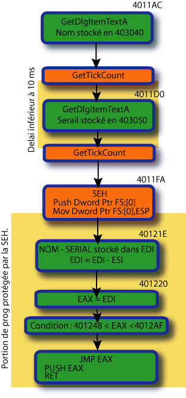
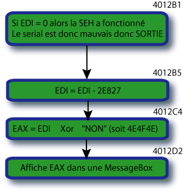
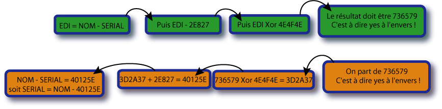

CRACKME 1 de MARS.
Nous entrons tout de suite dans le vif du sujet...le travail commence en 401197 où vous pouvez voir deux GetDlgItemTextA qui récupèrent le nom et le serial.
Voici un schéma qui illustre le fonctionnement du programme de MARS :

Première
remarque :
Le nom ne doit pas dépasser 8 caractères et le serial doit au moins avoir 1 caractère de long. Vous voyez ces deux conditions en 4011B1 et 4011D5 :
4011B1 CMP EAX, 8 Compare la longueur du nom à 8
4011B4 JG Crackme1.004012FB S'il est plus grand, sortie
4011D5 CMP EAX, 1 Compare la longueur du serial à 1
4011D8 JLE Crackme1.004012FB S'il est égal ou inférieur, sortie aussi !!
Deuxième remarque :
Vous voyez que le second GetDlgItemTextA est entouré de deux GetTickCount (api qui évalue le temps écoulé depuis le lancement du programme). L'écart entre les deux relevés ne doit pas excéder 10 ms sinon, on sort de la procédure !!
ça sert à quoi me direz-vous ?
C'est un anti-debugger, tout simplement ! Si le programme se lance sans être tracé, le temps ne dépasse pas les 10 ms mais si vous tracez avec F8, vous allez bien évidemment dépasser largement le temps prévu, vous êtes donc en train de lire le programme qui se défend comme il peut en vous virant de la procédure...Vous n'avez qu'à poser un BP juste après ce méchant anti-debugger, c'est à dire en 4011EE.
Troisième remarque :
La SEH sert à protéger le programme d'une exception (offense commise à windows) qui risque fort de se produire au moment du :
401242 PUSH EAX
401243 RET
(Je signale au passage que ces deux instructions sont équivalentes à un simple JMP EAX.)
En effet, eax est calculé en fonction du nom et du serial. Si le serial est mauvais, eax n'a pas la bonne valeur et le programme va sauter on ne sait où ce qui va générer une exception. Si l'exception se produit, la SEH nous envoie en 4012B1 qui est l'offset du handler de la SEH (on le voit en 4011F5 PUSH 4012B1).
Que se passe-t-il en 4012B1 ? On affiche le message «NON»....Ben oui, votre serial est mauvais !!!
Comment trouver le bon serial ?
Déjà, lorsque vous saisissez un serial bidon, si vous validez, il ne se passe rien dans la plupart des cas ou vous avez droit au message «NON» cité ci-dessus.
Que se passe-t-il ?
1 ) Si vous n'obtenez rien, c'est que votre eax calculé ne remplit pas la double condition :
401248 < EAX < 4012AF
2 ) Si vous obtenez «NON» comme message, c'est la SEH qui a réglé votre cas !
Que veut-on obtenir alors ?
Que le message «NON» devienne un message «OUI»...ce serait sympa ;-))
En fait, notre auteur a choisi «yes» comme message pour nous signaler qu'on a réussi ! (le coquin) Là, il fallait y penser !!!On verra qu'on pouvait faire aussi sans le savoir.
Partons du principe que le résultat est yes. En hexa, ça donne 736579 (oui, c'est à l'envers).Voici illustrée la procédure d'affichage de ce fameux message :

Elle débute en 4012B1 et commence par un test sur EDI (rappel :c'est NOM – SERIAL). Si EDI = 0, c'est que la SEH a fonctionné, donc c'est pas bon et on dégage !
Sinon, on enchaine une soustraction et un XOR pour afficher le message EAX !! Et c'est ce message là qui doit être «yes». On doit donc remonter les calculs en partant de la fin avec notre message «yes» comme point de «départ». Si on récapitule le calcul en entier, ça donne :

Nous allons donc inverser le calcul pour obtenir le bon serial ! (schéma orangé)
On choisit comme nom : MarS
Le R minuscule est volontaire...
Comme vous le voyez en orange, on part de 736579, on inverse le XOR (XOR est son propre inverse !) et on obtient 3D2A37 ! On inverse la soustraction, on obtient 40125E !
Tiens, le voilà notre EAX tant cherché !
Pour finir, 40125E est en fait le résultat de la soustraction du NOM et du SERIAL...donc, pour obtenir le SERIAL, on fait :
SERIAL = NOM – 40125E.
Si NOM = MArS (en hexa, ça donne 5372414D), on obtient :
SERIAL = 5372414D – 0040125E = 53322EEF. Ça donne en ascii (on inverse), ï.2S
(pour le saisir le ï au clavier, c'est ALT + 139)
Remarque finale : Si on ne devine pas que le message cherché est «yes» on doit y aller en force en essayant toutes les adresses qui vérifient la double condition :
401248 < EAX < 4012AF.
Pour ça, il faut poser un BP en 401224 (juste avant la double condition), modifier la valeur de EAX et lui donner successivement les valeurs 401248 – 40124D – 401253 -.... - 4012AF !!
Evidemment, il y a autant d'adresses car l'auteur essaie de brouiller les pistes !!
Juillet 2004 – BeatriX